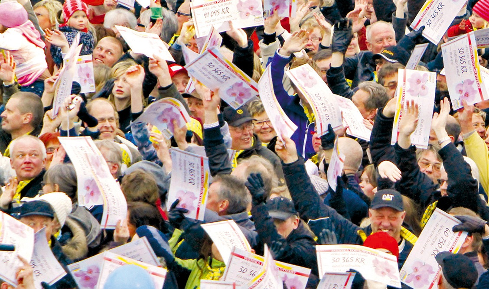
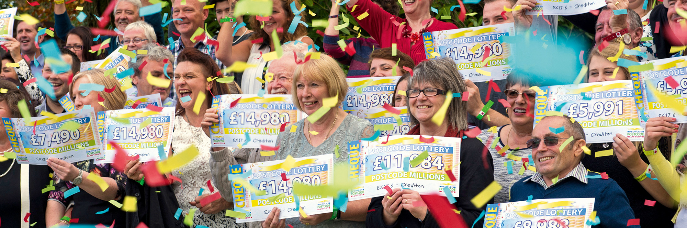
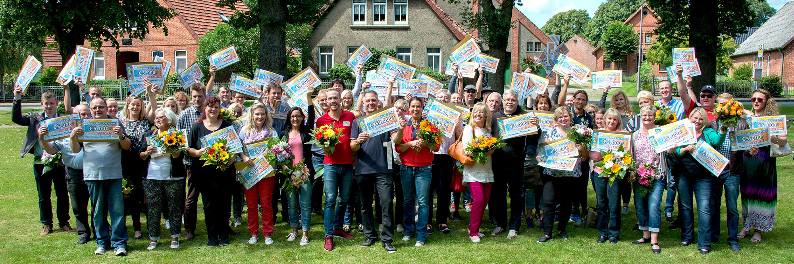
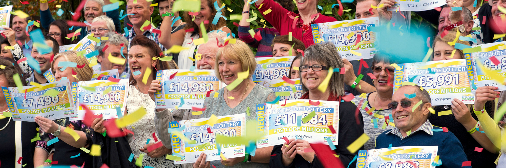
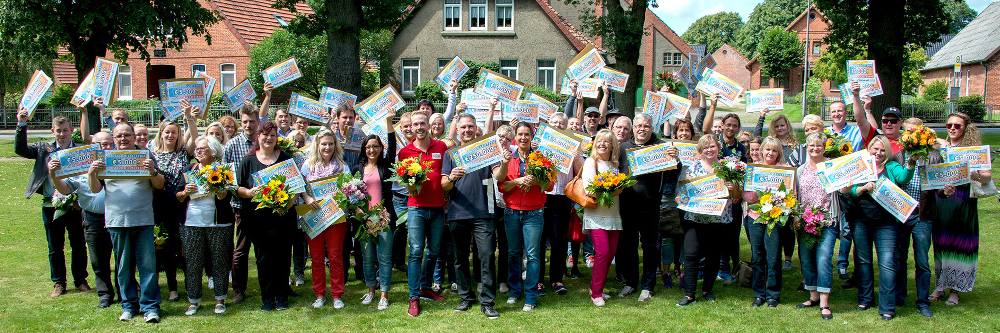

Criadora de loteria solidária, empresa doa R$ 38 bi e se torna a 3ª maior investidora social do mundo
10 de Setembro de 2018 às 07:00
Já imaginou concorrer a um prêmio e, ao mesmo tempo, ter a oportunidade de fazer o bem? Pois é exatamente isso que a empresa holandesa Novamedia proporciona aos habitantes dos quatro países europeus onde lançou loterias solidárias — parte dos recursos das apostas é destinada a organizações da sociedade civil de todo o mundo. Em 28 anos, a iniciativa já doou mais de € 8.6 bilhões (quase R$ 38 bilhões) para 673 instituições.
A Novamedia criou sua primeira loteria beneficente em 1989 — a Nationale Postcode Loterij, ou Loteria Nacional de Código Postal. Em 2005, levou a ideia para a Suécia e Grã-Bretanha e, em 2016, para a Alemanha. Também lançou outras duas na própria Holanda.
Em todas elas, o princípio é simples: cada pessoa que vive em uma casa paga uma determinada quantia para colocar seu código postal, popularmente conhecido como CEP no Brasil, na disputa por prêmios sorteados periodicamente — são oferecidas desde estadias em hotéis até quantias milionárias. Já a parcela destinada ao investimento social varia em cada país (30% na Grã-Bretanha e na Alemanha, 32% na Suécia e 50% na Holanda).
Em 2017, € 715 milhões (mais de R$ 3 bilhões) — uma parte do que se arrecadou por meio da venda dos bilhetes — foram para projetos de diferentes causas, distribuídos por vários países. Com isso, a Novamedia, de acordo com ranking da revista City A.M., firmou-se como a terceira maior doadora privada do mundo, atrás apenas do Wellcome Trust, do Reino Unido, e da Bill & Melinda Gates Foundation, a primeira da lista.
“Pessoas, planeta e transparência”
Cada país deve obedecer a três diretrizes determinadas pela Novamedia para a escolha dos projetos: pessoas, planeta e transparência. Dentro desses parâmetros, as loterias têm autonomia para decidir como os recursos serão aplicados. São lançados editais e as propostas inscritas passam pelo crivo de bancas de conselheiros. Após profunda análise, algumas delas são selecionadas.
A organização mantém um olhar atento ao uso dos recursos investidos. Além de uma fiscalização rigorosa, ainda oferece constantes notícias para que o público também possam acompanhar o que tem sido feito com os recursos oriundos dos bilhetes.
A empresa se submete a constantes processos de auditoria, até para entrar em conformidade com as leis muito restritas que regem o estabelecimento de jogos de azar na Europa.
O sucesso tem feito com que a Novamedia busque expandir seus locais de atuação, ainda que encontre barreiras —muitos países não acham simpática a ideia de levar concorrência para suas loterias nacionais, fonte de verba para os estados. O próximo passo, segundo a empresa, será a criação de uma filial na Noruega.
Investimentos globais
Um processo em andamento atualmente ilustra bem o quanto criteriosa é a forma como os projetos são selecionados. A unidade da Holanda lançou um edital para escolher uma start up de qualquer lugar do mundo para receber € 500 mil, com o objetivo de financiar iniciativas ambientalmente sustentáveis.
Houve 845 inscritos, dos quais 25 deles, distribuídos por países como Chile, Peru, México, Quênia, Dinamarca, Israel e Índia, saíram finalistas. O sucesso da iniciativa pode ser atestado pelo seu estrelado elenco de embaixadores. Entre aqueles que promovem a Novamedia estão o tenista Rafael Nadal, o ator George Clooney e o prêmio Nobel da Paz bispo Desmond Tutu.
A loteria também se beneficia de embaixadores que participam de programas locais de televisão, ampliando, assim, seu alcance. Para se ter uma ideia do engajamento das pessoas, na Holanda, país com cerca de 17 milhões de habitantes, foram vendidos, no ano passado, mais de 5 milhões de bilhetes.


A Novamedia criou sua primeira loteria beneficente em 1989 — a Nationale Postcode Loterij, ou Loteria Nacional de Código Postal. Em 2005, levou a ideia para a Suécia e Grã-Bretanha e, em 2016, para a Alemanha. Também lançou outras duas na própria Holanda.
Em todas elas, o princípio é simples: cada pessoa que vive em uma casa paga uma determinada quantia para colocar seu código postal, popularmente conhecido como CEP no Brasil, na disputa por prêmios sorteados periodicamente — são oferecidas desde estadias em hotéis até quantias milionárias. Já a parcela destinada ao investimento social varia em cada país (30% na Grã-Bretanha e na Alemanha, 32% na Suécia e 50% na Holanda).
Em 2017, € 715 milhões (mais de R$ 3 bilhões) — uma parte do que se arrecadou por meio da venda dos bilhetes — foram para projetos de diferentes causas, distribuídos por vários países. Com isso, a Novamedia, de acordo com ranking da revista City A.M., firmou-se como a terceira maior doadora privada do mundo, atrás apenas do Wellcome Trust, do Reino Unido, e da Bill & Melinda Gates Foundation, a primeira da lista.
“Pessoas, planeta e transparência”
Cada país deve obedecer a três diretrizes determinadas pela Novamedia para a escolha dos projetos: pessoas, planeta e transparência. Dentro desses parâmetros, as loterias têm autonomia para decidir como os recursos serão aplicados. São lançados editais e as propostas inscritas passam pelo crivo de bancas de conselheiros. Após profunda análise, algumas delas são selecionadas.
A organização mantém um olhar atento ao uso dos recursos investidos. Além de uma fiscalização rigorosa, ainda oferece constantes notícias para que o público também possam acompanhar o que tem sido feito com os recursos oriundos dos bilhetes.
A empresa se submete a constantes processos de auditoria, até para entrar em conformidade com as leis muito restritas que regem o estabelecimento de jogos de azar na Europa.
O sucesso tem feito com que a Novamedia busque expandir seus locais de atuação, ainda que encontre barreiras —muitos países não acham simpática a ideia de levar concorrência para suas loterias nacionais, fonte de verba para os estados. O próximo passo, segundo a empresa, será a criação de uma filial na Noruega.
Investimentos globais
Um processo em andamento atualmente ilustra bem o quanto criteriosa é a forma como os projetos são selecionados. A unidade da Holanda lançou um edital para escolher uma start up de qualquer lugar do mundo para receber € 500 mil, com o objetivo de financiar iniciativas ambientalmente sustentáveis.
Houve 845 inscritos, dos quais 25 deles, distribuídos por países como Chile, Peru, México, Quênia, Dinamarca, Israel e Índia, saíram finalistas. O sucesso da iniciativa pode ser atestado pelo seu estrelado elenco de embaixadores. Entre aqueles que promovem a Novamedia estão o tenista Rafael Nadal, o ator George Clooney e o prêmio Nobel da Paz bispo Desmond Tutu.
A loteria também se beneficia de embaixadores que participam de programas locais de televisão, ampliando, assim, seu alcance. Para se ter uma ideia do engajamento das pessoas, na Holanda, país com cerca de 17 milhões de habitantes, foram vendidos, no ano passado, mais de 5 milhões de bilhetes.


Notícias mais populares
Gestão
Em agosto de 2017, a revista ÉPOCA e o Instituto Doar divulgaram a primeira ediç&...
Contexto e tendências
Criado para tornar mais transparentes as parcerias entre a administração públic...
Profissional captador
A captação de recursos é fundamental para a sustentabilidade de uma organiza&cc...